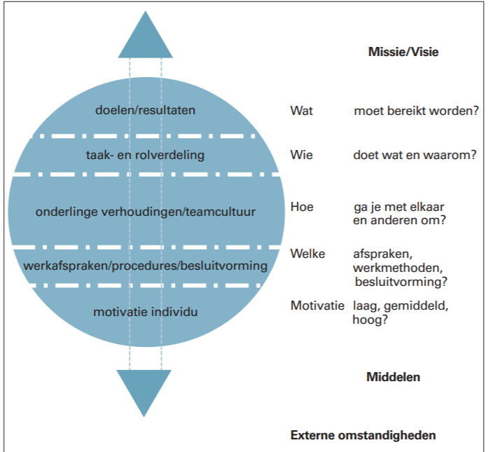

Door het coronavirus heb ik met mijn teamgenoten en met de opdrachtgever ander moeten samenwerken dan ik normaal gesproken gewend ben. Daarbij ging het voornamelijk om de volgende samenwerkingsvormen:
Fysieke samenwerking
Fysieke samenwerking is samenwerken terwijl je allebei fysiek aanwezig bent op de locatie, begin van de minor was dit nog mogelijk.
Ik heb veel lessen samen met mijn groepsgenoten mogen volgen, ook de pitch van de opdrachtgevers was nog fysiek. Hier hebben wij dus kort kennis kunnen maken
met de opdrachtgever.
Online samenwerking
Het overgrootte gedeelte van de samenwerking heeft online plaatsgevonden, zowel met mijn groepsgenoten als met de opdrachtgever(ICR3ATE).
Het online samenwerken was een gevolg van het oplaaiende COVID-19 virus en de daarbij horende maatregelen en restricties vanuit de overheid.
Hierdoor was ik en mijn groep genoodzaakt de samenwerking online voort te zetten. De samenwerking in de groep verliep voornamelijk via Whatsapp, Teams en Google Drive.
Terwijl de samenwerking met de opdrachtgever vooral verliep via Google Meet en de mail.
Theorie samenwerken
Volgens Jongebreur-Ruskamp en Vinke (2004) is de basis voor een goed teamfunctioneren een gemeenschappelijk doel. Zonder doel
is er ook geen reden om er je energie in te steken. Zij zeggen dat er sprake is van effectief samenwerken wanneer:

Figuur 1. Model voor effectief teamfunctioneren. Overgenomen uit Samenwerken in een team: een model voor effectief teamfunctioneren door M. Jongebreur-Ruskamp & J.M. Vinke, 2004 (http://www.gertjanschop.com/sitebuildercontent/sitebuilderfiles/samenwerken_in_een_team.pdf
AG5 (2020), een bedrijf dat gespecialiseerd is in skills management software, geeft de volgende punten die erg belangrijk zijn voor het samenwerken in een team:
Wat steeds naar voren komt is dat het belangrijk is om van te voren duidelijk de rollen van alle teamleden te weten. Daarnaast is een gemeenschappelijk doel erg belangrijk. Hieronder zal aan de hand van de bovenstaande literatuur gekeken worden naar de samenwerking binnen de projectgroep en de samenwerking met ICR3ATE.
Samenwerking projectteam
Het projectteam bestond uit Luuk van der Voort, Nick van Oostrum en Job Wibbens (ikzelf). Vanuit de minor Smart Industry werken wij in groepsverband aan een
project voor ICR3ATE. Onze samenwerking vond op het begin voornamelijk fysiek plaats op de locatie van de minor Smart Industry in Wijchen. Door Corona is de samenwerking
verplaatst naar voornamelijk online. Hiervoor maakten we gebruik van Teams, Whatsapp en Google Drive.
Het hebben van een helder gemeenschappelijk doel is erg belangrijk (AG5, 2020), als projectgroep hadden wij het gemeenschappelijke doel om deze minor succesvol af te sluiten. Om dit te behalen was het van belang om het project voor ICR3ATE goed uit te voeren en daarnaat ook de opdrachten vanuit de minor goed te maken.
Het hebben van een duidelijke rolverdeling is erg belangrijk bij succesvol samenwerken (Jongebreur-Ruskamp & Vinke, 2004). Onze rolverdeling is hier te vinden.
Samenwerking ICR3ATE
Als projectteam hebben we een project, genaamd SennetTa, gedaan voor ICR3ATE. Wij hadden hierin een onderzoekende functie waarbij we veelvuldig samenwerkten met de software developer van ICR3ATE.
Met de software developer hadden wij wekelijks contact om de voortgang en de huidige stand van zaken te bespreken. De software developer hielp ons tevens met vragen en hij heeft ons erg geholpen
tijdens het project.
Naast het wekelijks contact met de software developer hadden we ook regelmatig contact met de CEO en tevens onze opdrachtgever Manfred van der Voort. Tijdens deze gesprekken gaf hij ons veel sturing en ook ondersteuning voor het onderzoek.
Daarnaast hebben wij ook enkele keren gesproken met Hubért, MSI docent, die ons geholpen heeft met vragen of tips die niet vanuit ICR3ATE gegeven konden worden. Daarnaast heeft Hubért ons ook geholpen om de samenwerking met ICR3ATE te bevorderen.
Het contact met zowel de software developer als met Manfred verliep via Google Meet en de mail.. Het contact met Hubért verliep via Teams en de mail.
Als tip wil ik ons mee geven om soms beter uit te zoeken wat nou echt de opdracht is. Manfred was hier soms wat vaag over, hierdoor wisten we soms niet goed wat we moesten doen. Door dit helderder te hebben hadden we sneller meer stappen kunnen maken.
Waar ik zelf erg tevreden over ben was de rolverdeling en de sfeer binnen ons team. We spraken elkaar ook vaak over wat informelere dingen, hierdoor was de sfeer erg goed.
Samenwerking ICR3ATE
De samenwerking met ICR3ATE heb ik als erg prettig ervaren, ondanks dat de samenwerking volledig online heeft plaats gevonden. We spraken elkaar wekelijks en hielden
elkaar goed op de hoogte. Soms was het wel wat lastig om een afspraak in te plannen met Manfred vanwege zijn drukke agenda. Echter stond de software developer altijd voor
ons klaar om vragen te beantwoorden. De samenwerking verliep redelijk informeel en de sfeer was goed.
Als verbeter punt voor onszelf en ICR3ATE is de duidelijkheid van opdrachten. Manfred was regelmatig een beetje vaag over wat er nou uitgezocht moest worden waardoor er niet veel tempo in zat. De software developer heeft op een gegeven moment een wat duidelijkere opdracht aan ons gegeven waardoor we erg snel veel meters konden maken. Wij hadden hier zelf ook actiever op kunnen duiden.
ICR3ATE is een erg leuk bedrijf wat ik zeker zou aanraden bij andere studenten. Er zijn erg veel mogelijkheden om dingen te leren en daarbij willen ze je ook zeker helpen.
AG5. (2020, 4 augustus). 9 tips voor succesvol samenwerken binnen een team. Geraadpleegd op 10 november 2020, van https://www.ag5.com/nl/samenwerken-binnen-een-team-tips/
Jongebreur-Ruskamp, M. & Vinke, J.M. (2004). Samenwerken in een team: een model voor effectief teamfunctioneren. Geraadpleegd op 10 november 2020, van http://www.gertjanschop.com/sitebuildercontent/sitebuilderfiles/samenwerken_in_een_team.pdf